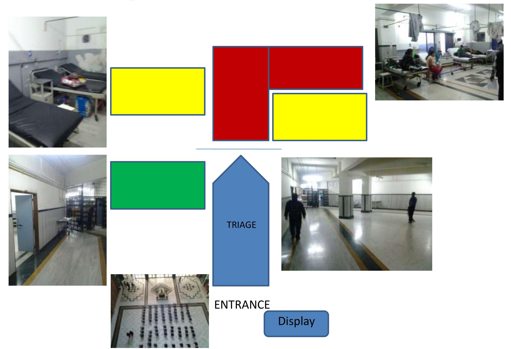

Advanced MCI Management & Conclusion
Mass Casualty Incident Management
- Definitive Care
- Referral
- By Commanding officer
- Not by treating doctor
- Provide command post
- Reassurance of safety
- Control overcrowding
- RED : General Surgeon, Anesthesiologist
- YELLOW : Orthopaediciar
- GREEN : Others
Transportation & Documentation
Coordination & Communication with Police, Media & Patient party
Mobilisation of Health Person in TRIAGE
Display Patient Name & Status
- Reassess patient
- Interchangeable status
Triage Selection Area in ER

Conclusion
- Hospitals should be prepared in handling mass casualty incidents with well written policy and guidelines.
- Triage system should be followed in ER
- Well equipped ER with skilled manpower can save lives in mass casualty incident.
- Initial treatment in ER by Emergency staffs is life saving whereas definitive treatment is delivered by specialist.